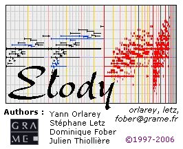

Versions
- 1.22 French and German versions. Panoramic added in MIDI Control. Thru and MIDI input indicator added. Rotative buttons improved. New sampler. New rules icons. TimeLine editor improved: buttons, shortcuts, undo, autoscroll, and some graphic bugs fixed. New windows reorganization functions. Absolute/relative values management in Parametrer. Confirmation dialog box when closing the document editor.
- 1.21 Improvements in TimeLine editor. Correction of a bug
in the sequencer for real-time transformations.
- 1.20 Real-time version, Linux version.
- 1.11 Bug correction in MIDIFile saving on both platforms.
- 1.1 Version for Macintosh and PC/Windows. New features are:
a TimeLine editor, the Guido Viewer, the deconstruction of expressions.
- 1.04 Bug correction release.
- 1.03 Elody does not use the Metrowerks JVM anymore.The application
has been updated to work with the Apple
MJR 2.0
- 1.02 MIDIFile management has been improved. When loading
a multi-tracks MIDIFile, each track will be associated with a
different color. It allows to manipule later each track individually.
A new window Publisher allows to publish/fetch Elody documents
from the Grame Elody server.
- 1.01 First released version.
Known problems
- Windows opening sometimes takes time especially when opening
the Sequence constructor or the Document Window.
- The manipulation of infinite objects build with the recursive
constructor may crash Elody.
- In the File manager Window, loading of URL sometimes does
not work correctly.
- The buttons in the Sequence constructor and the Chord
editor do no display well with more than 256 colors.